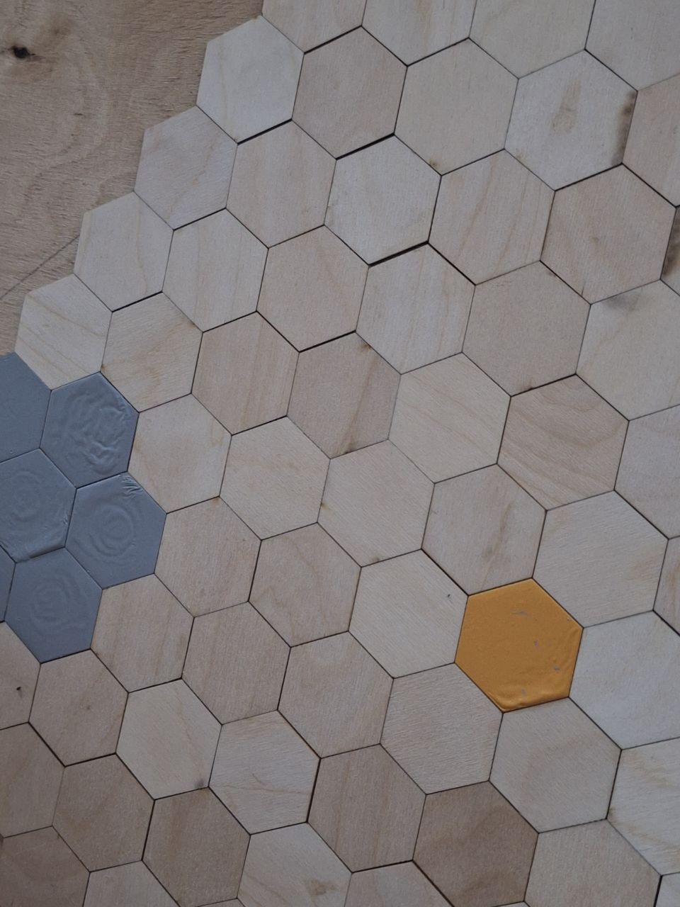

ГАЛЕРЕЯ
Мир Трона


Гексагональная стратегическая игра, где оба игрока делают ходы одновременно. Мир, в котором невозможно просчитать всё. Мир, где важны не только логика, но и предсказание намерений соперника.

Игровое поле состоит из 127 гексагональных клеток, создающих уникальную стратегическую геометрию и огромное количество вариантов развития партии.
Оба игрока одновременно фиксируют действия фигур, а затем раскрывают их. Это уничтожает преимущество первого хода и делает партии непредсказуемыми.
Победить можно захватом Трона Королём, постановкой Мата, Осадой Замка или лишением противника возможных ходов.
«Трон Десяти Миров» — настольная стратегическая игра, в которой два игрока одновременно фиксируют ходы фигур, после чего перемещают их на гексагональном поле. В отличие от классических пошаговых стратегий, здесь отсутствует понятие «идеального» хода.
Игрокам приходится учитывать психологию соперника, просчитывать облака возможных действий и адаптироваться к постоянно меняющейся ситуации на поле.
Во многих стратегиях первый игрок получает преимущество. В «Троне» оба игрока находятся в полностью равных условиях. Одновременные действия создают честный баланс 50/50.
Компьютеры уже превзошли человека в шахматах, го и шашках. Но в «Троне» невозможно просчитать все варианты, потому что игроки действуют одновременно.
В игре отсутствует единственный «лучший ход». Вместо этого существуют облака сильнейших решений, зависящие от поведения соперника.
Следите за проектом